Filter a Replication
An XDCR replication can be filtered, by means of expressions; so that only selected documents are replicated from the source to the target cluster.
Understanding Filtering
XDCR Advanced Filtering allows a limited subset of documents to be replicated from the source bucket. An expression is created, and used to identify documents that provide a match. The expression can be applied to:
-
The document’s key
-
Fields and values in the document-body
-
The document’s extended attributes
This page explains the practical steps whereby filtering can be performed. Note that when entered by means of the UI, the expression can be a maximum of 250 bytes (characters) in length: this restriction does not apply to expressions entered by means of the CLI or the REST API.
For a full conceptual description and links to reference information on regular and filtering expressions, see XDCR Advanced Filtering.
Examples on This Page
The examples in the subsections below show how to filter the same replication; using the UI, the CLI, and the REST API respectively. As their starting-point, the examples assume the following:
-
Two clusters already exist; each containing a single node. These are named after their IP addresses:
10.144.210.101and10.144.210.102. -
Clusters
10.144.210.101and10.144.210.102each contain a single bucket, which is thetravel-samplebucket. -
On cluster
10.144.210.102, the buckettravel-samplecontains an additional, administrator-created collection, within the scope namedinventory: this collection is named France_airport. (For information on creating scopes and collections, see Manage Scopes and Collections). -
On cluster
10.144.210.101, a reference has been defined to10.144.210.102, as a remote cluster. -
No replication between the clusters yet exists.
-
Each cluster has the Full Administrator username of
Administrator, and password ofpassword.
Filter an XDCR Replication with the UI
Proceed as follows:
-
On
10.144.210.101, access Couchbase Web Console. Left-click on the XDCR tab, in the right-hand navigation menu.
This displays the XDCR Replications screen, whose Remote Clusters panel currently shows that a reference to
10.144.210.102has been defined; and whose Outgoing Replications panel shows that no replications have yet been defined.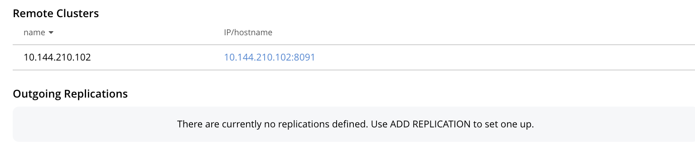 -
To define and filter a replication, left-click on the Add Replication tab, towards the right:

This displays the XDCR Add Replication screen:

-
Specify travel-sample as both source and target bucket; then specify
10.144.210.1012as the target cluster. The fields now appear as follows: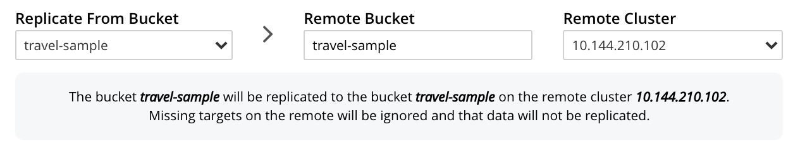 -
Left-click on the Filter Replication toggle. The panel now expands vertically:
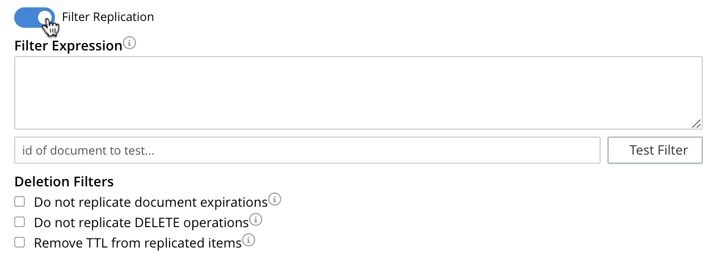To replicate only those documents whose key features the string airport, and whose body contains France as the value of country, enter the expression 'REGEXP_CONTAINS(country, "France")', in the Filter Expression field:
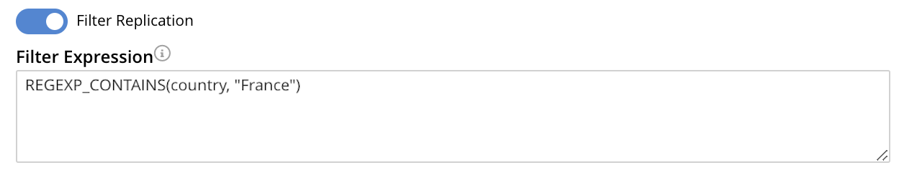 -
Test the expression against a specified document.
Note that an expression must be tested successfully, before it can be included as part of the replication: if an expression is specified and attemptedly saved without having been tested, the expression is ignored when saving occurs; and the replication is thus started in unfiltered form.
Enter the document’s id in the interactive field adjacent to the Test Filter button. Then, left-click on the Test Filter button. If the specified document provides a successful match, this is indicated to the right of the Test Filter button:
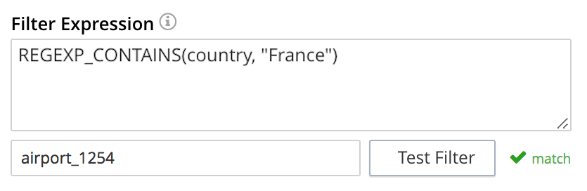If the test fails, a
no matchnotification is provided, in the same location. -
Left-click on the Specify Scopes, Collections, and Mappings toggle. The panel expands vertically:
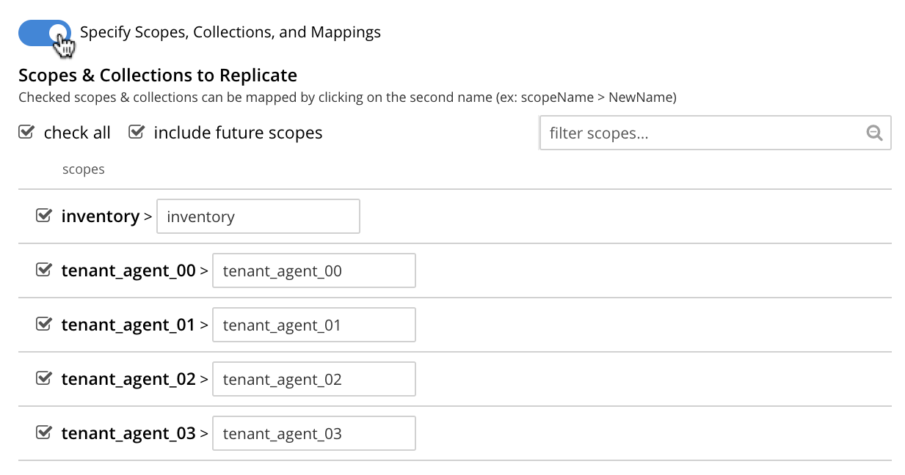 -
Uncheck all listed scopes except inventory. Left-click on the inventory row, to expand the row vertically:
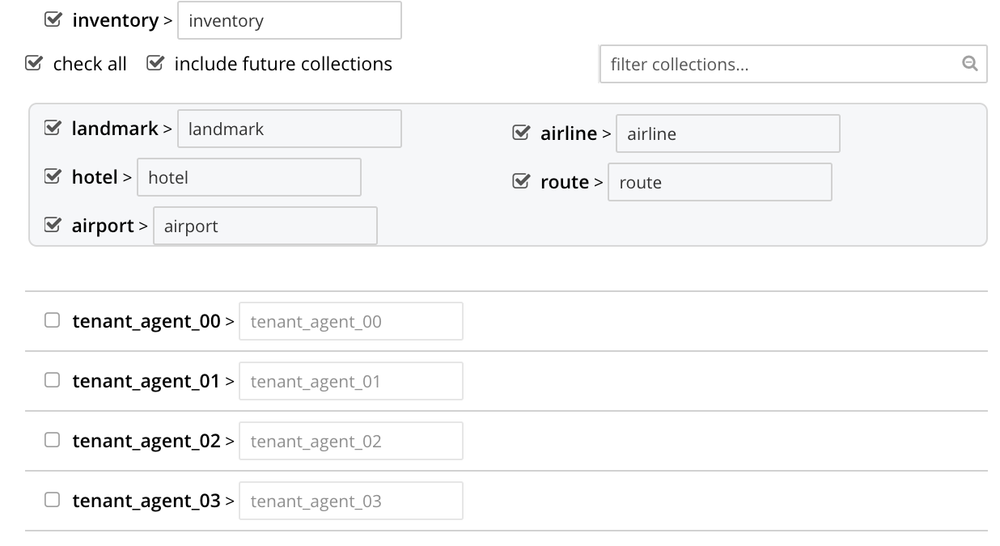 -
Uncheck all collections listed within the inventory scope, except airport; and modify the destination field for airport to read France_airport. The row for inventory thus appears as follows:
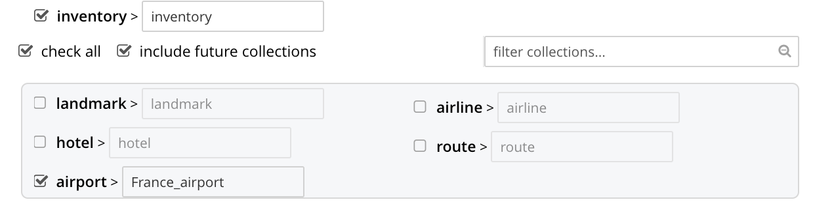This indicates that only data from the source collection airport will be replicated, and will be replicated to the France_airport collection on the target. The filter previously specified in the Filter Expression panel will be applied, and only documents that provide a match to the filter will be replicated.
-
Left-click on the Save Replication button, at the bottom of the screen:
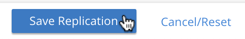This saves the replication, and redisplays the XDCR Replications screen. This now indicates that the saved replication is running:
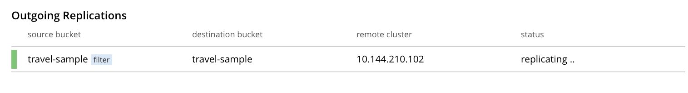To check the filter that has been applied, left-click on the the
filtertab: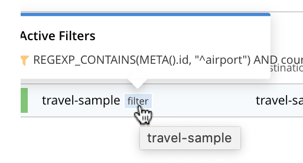Note that if a filter has been specified, but has not been successfully tested, and therefore has not been included in the replication, the
filtertab does not appear on the row for the replication. -
To examine the content of collection inventory.France_airport, within
travel-sampleon cluster10.144.210.102, access the cluster by means of Couchbase Web Console, and left-click on the Buckets tab, in the left-hand navigation bar. Then, examine the collections within the inventory scope. Left-click on the Documents tab for the collection France_airport: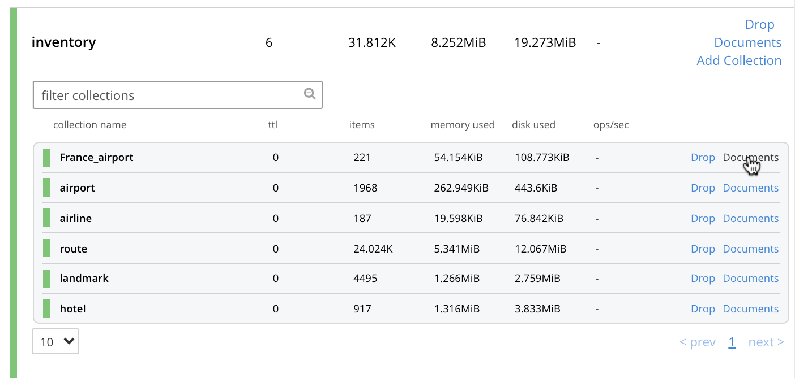This brings up the Documents screen for the collection. The contents affirm that replication has occurred successfully:
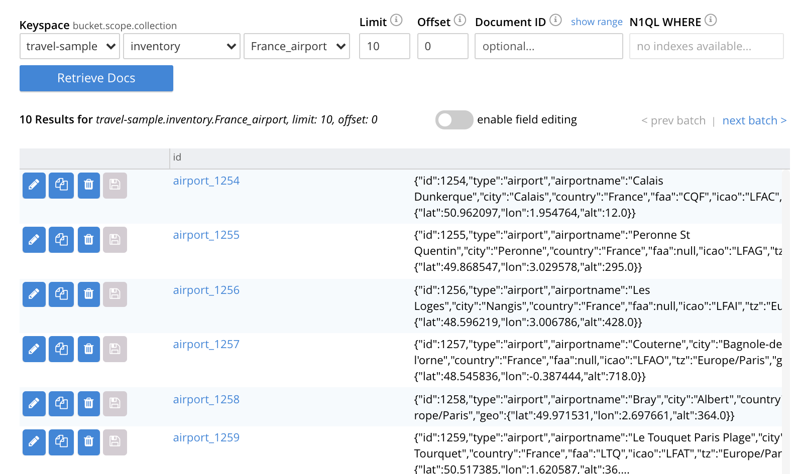
For lists of available regular and filtering expressions, see the XDCR Reference.
Applying Multiple Filters
Only one filter can be applied to a single replication: thus, once defined, the filter is applied to all mappings. Note also that only one replication can be established between a given source bucket and a given target bucket. Therefore, to apply multiple filters, the corresponding number of replications must be established between different bucket-combinations.
Deletion Filters
The Filter Replication panel features optional deletion filters:

These filters control whether the deletion of a document at source causes deletion of a replica that has been created. Each filter covers a specific deletion-context:
-
Do not replicate document expirations. If checked, this means that if, having been replicated, the document at source expires and is deleted, the replicated copy of the document will not be deleted. Conversely, if this option is not checked, expirations at source are replicated; meaning that the replicated copy of the document will be deleted.
-
Do not replicate DELETE operations. If checked, this means that if, having been replicated, the document at source is expressly deleted, the replicated copy of the document will not be deleted. Conversely, if this option is not checked, deletions at source are replicated; meaning that the replicated copy of the document will be deleted.
-
Remove TTL from replicated items. If checked, this means that the TTL that a document bears at source is not made part of the replicated copy of the document: instead, the TTL of the replicated copy is set to 0. Conversely, if this option is not checked, the TTL is made part of the replicated copy of the document, and may thereby determine when the replicated copy of the document expires.
For more information on deletion filters, see Using Deletion Filters. For information on TTL and expiration, see Expiration.
Note that the replication of deletions, expirations, and/or TTLs is not prevented by the specifying of a filter that is formed with regular and other filtering expressions: to ensure that document-deletions, expirations, and/or TTLs are not replicated, the appropriate deletion-filter checkboxes must be checked.
Editing
Once established, an XDCR filter — along with Replication Priority and Advanced Replication Settings — can be edited.
In the Outgoing Replications panel, left-click on the row for the replication. When the Edit button is displayed, left-click on it. This brings up the XDCR Edit Replication screen: it content is nearly identical to that of the XDCR Add Replications screen, and thereby allows the filter to be modified and saved. Note that the radio-button options Save filter & restart replication, and Save & continue replicating are provided:
For a complete description of these options, see Filter-Expression Editing.
Left-click on the Save Replication button, to save edits.
Filter an XDCR Replication with the CLI
Starting from the scenario defined above, in Examples on This Page, the CLI xdcr-replicate command can be used to create a filtered XDCR replication.
The example assumes that the travel-sample bucket is resident on each of two, single-node clusters, which are each named after their IP address.
The bucket on the target has an additional collection within the inventory scope, which is named France_airport.
The replication is configured to replicate only to the collection France_airport; and to replicate from the source-collection airport only those documents whose country value is France.
This requires use of the following filter-expression:
'REGEXP_CONTAINS(country, "France")'
This also requires an explicit mapping to be specified, as follows:
{
"tenant_agent_00": null,
"tenant_agent_01": null,
"tenant_agent_02": null,
"tenant_agent_03": null,
"inventory.landmark": null,
"inventory.hotel": null,
"inventory.airline": null,
"inventory.route": null,
"inventory.airport": "inventory.France_airport"
}
This explicit mapping specifies that replication from all tenant_agent scopes on the source is denied.
It also specifies that replication from all source-collections within inventory is denied; with the exception of replication from the source-collection inventory.airport, which is validated as proceeding to the target-collection inventory.France_airport.
The full expression is as follows.
Note that the collection-explicit-mappings flag has been set to 1, as required, in order to enable explicit mappings:
/opt/couchbase/bin/couchbase-cli xdcr-replicate \
-c localhost:8091 \
-u Administrator -p password \
--create --xdcr-cluster-name 10.144.210.102 \
--xdcr-from-bucket travel-sample \
--xdcr-to-bucket travel-sample \
--filter-expression 'REGEXP_CONTAINS(country, "France")' \
--collection-explicit-mappings 1 \
--collection-mapping-rules '{"tenant_agent_00":null,"tenant_agent_01":null,"tenant_agent_02":null,"tenant_agent_03":null,"inventory.landmark":null,"inventory.hotel":null,"inventory.airline":null,"inventory.route":null,"inventory.airport":"inventory.France_airport"}'
If successful, the command returns the following output:
SUCCESS: XDCR replication created
For more information, see the complete reference for the xdcr-replicate command.
Filter an XDCR Replication with the REST API
Starting from the scenario defined above, in Examples on This Page, the REST API’s POST /controller/createReplication HTTP method and URI can be used to create a filtered XDCR replication.
The assumptions and requirements are identical to those described above, in Filter an XDCR Replication with the CLI.
curl -v -X POST -u Administrator:password \ http://localhost:8091/controller/createReplication \ -d replicationType=continuous \ -d fromBucket=travel-sample \ -d toCluster=10.144.210.102 \ -d toBucket=travel-sample \ -d priority=High \ -d collectionsExplicitMapping=true \ -d filterExpression=%27REGEXP_CONTAINS(country%2C%20%22France%22)%27 \ -d colMappingRules=%7B%22tenant_agent_00%22%3Anull%2C%22tenant_agent_01%22%3Anull%2C%22tenant_agent_02%22%3Anull%2C%22tenant_agent_03%22%3Anull%2C%22inventory.landmark%22%3Anull%2C%22inventory.hotel%22%3Anull%2C%22inventory.airline%22%3Anull%2C%22inventory.route%22%3Anull%2C%22inventory.airport%22%3A%22inventory.France_airport%22%7D
Note that the flag collectionsExplicitMapping is set to true; as is required to enable explicit mapping.
Note also that the filter and mapping-rules expressions are necessarily encoded.
If the call is successful, 200 OK is returned, with a response such as the following:
{"id":"8ac0de0d95d5863d7b41e246755a7ec8/travel-sample/travel-sample"}
The response features the id of the successfully created replication.
For more information, see Creating XDCR Replications.
Next Steps
Data, lost from a local cluster due to catastrophic outage, can be recovered from a remote cluster to which an XDCR replication was occurring. See Recover Data with XDCR.